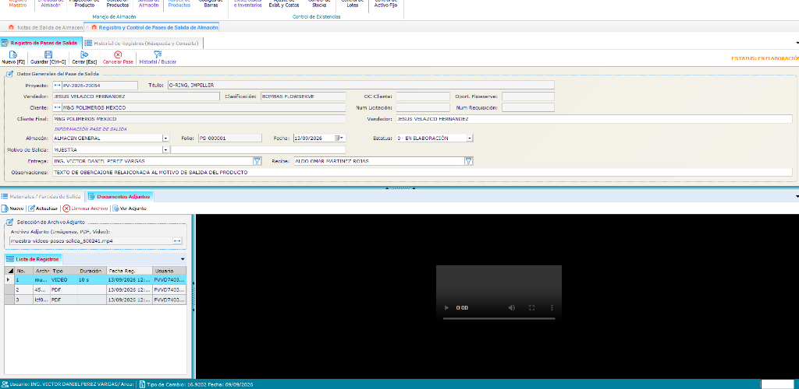
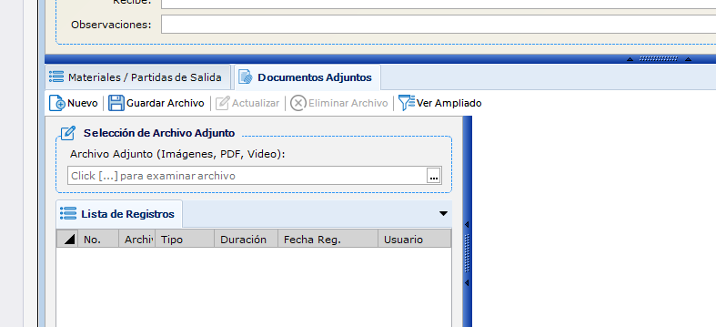
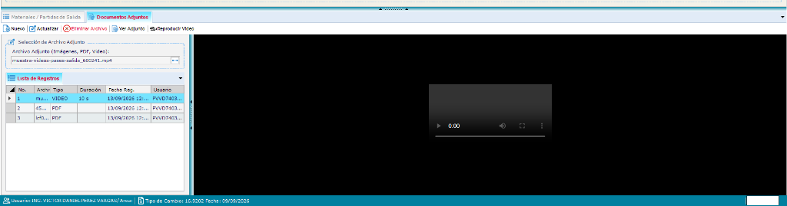

Guía de operación básica para el registro de salidas de almacén, captura de partidas, gestión de evidencias documentales (PDF, imágenes y videos) y consulta histórica en frmPasesSalidaAlmacen.
Siga estos 6 pasos ordenados conforme a la operación real del sistema:
Haga clic en el botón Nuevo de la barra superior para limpiar la pantalla e inicializar el registro.
Seleccione la fecha, motivo de salida, cliente/destino y el nombre de quien recibe. El usuario de entrega se carga automáticamente.
Busque los materiales en el catálogo, ingrese cantidad, lote y caducidad, y presione Agregar Partida.
Presione Guardar en la barra principal. El sistema asignará el Folio oficial y registrará la salida en base de datos.
Vaya a la pestaña Documentos Adjuntos, cargue remisiones firmadas (PDF), fotos o videos de entrega (máx 30s) y presione Guardar Archivo.
Compruebe las evidencias en el visor integrado o localice el registro en la pestaña Búsqueda para imprimir o consultar posteriormente.
El módulo Pases de Salida de Almacén (frmPasesSalidaAlmacen) es el componente central de control para documentar formalmente la salida de mercancías, medicamentos, reactivos e insumos hospitalarios desde el almacén central hacia cualquier destino.
Para ingresar al módulo desde el menú principal de la aplicación:

| Área | Nombre en Pantalla | Función Principal |
|---|---|---|
| Barra Superior | Barra de Acciones Global | Contiene los botones Nuevo, Guardar, Cancelar Pase y Cerrar. |
| Pestaña 1 | Registro del Pase de Salida | Área de trabajo donde se captura el encabezado (datos generales), la lista de materiales y los documentos anexos. |
| Pestaña 2 | Búsqueda y Consulta | Permite localizar pases anteriores por rango de fecha, folio, usuario o receptor para ver su estado o reimprimir. |
En la parte superior de la pestaña Registro del Pase de Salida se ubica el panel de datos generales:
| Campo | Obligatorio | Descripción y Comportamiento |
|---|---|---|
| Folio | Automático | Identificador único asignado por el sistema una vez que se guarda el pase. En un pase nuevo se muestra en blanco o con folio temporal. |
| Fecha Salida | Sí | Fecha oficial de retiro de mercancía. Por defecto tiene la fecha actual del sistema. |
| Usuario Entrega | Sí | Se autocompleta con el nombre del usuario con sesión activa. Cuenta con botón de búsqueda () en caso de asignar a otro responsable autorizado. |
| Motivo de Salida | Sí | Lista desplegable: VENTA, TRASPASO, MERMA, GARANTÍA, CONSUMO INTERNO, DEMOSTRACIÓN, etc. |
| Nombre Recibió | Sí | Nombre de la persona que recoge o recibe la mercancía física. |
| Destino | Recomendado | Sucursal, área médica, cliente o proveedor al que se envía la mercancía. |
| Referencias Opcionales | Opcional | Orden de Compra de Cliente, No. de Requisición y No. de Licitación para trazabilidad contable. |
| Observaciones | Opcional | Notas especiales, detalles del transporte o justificación del movimiento. |
Debajo del encabezado, en la sub-pestaña Materiales / Partidas de Salida, se realiza el despacho producto por producto:
La sub-pestaña Documentos Adjuntos permite asociar evidencias digitales que respaldan la entrega de los materiales.

| Botón | Acción | Condición de Uso |
|---|---|---|
| Nuevo | Limpia la selección para adjuntar un nuevo archivo. | Siempre disponible. |
| Guardar Archivo | Sube el archivo al servidor FTP y lo registra en la base de datos vinculado al pase. | Habilitado al seleccionar un archivo local o para actualizar. |
| Eliminar Archivo | Elimina el adjunto del registro y del servidor. | Activo al seleccionar un adjunto de la lista. |
| Ver Adjunto | Abre la vista ampliada a pantalla completa (para documentos PDF e imágenes). | Activo al seleccionar cualquier archivo. Si es video, abre el reproductor. |
| Reproducir Video | Abre el reproductor multimedia independiente con controles de Play, Pausa, Tiempo y Pantalla Completa. | Se activa automáticamente sólo cuando el archivo seleccionado es un video. |
Cuando se adjuntan videos de prueba de entrega (por ejemplo, mostrando el desempaque, estado de sellos o firma del receptor):

Si abre un pase ya existente desde la pestaña de Búsqueda:
La pestaña Búsqueda y Consulta de Pases permite auditar y revisar todos los movimientos registrados históricamente:
Ubique el registro en la grilla de resultados y:
El sistema se trasladará automáticamente a la Pestaña 1 cargando el encabezado, todas las partidas y el listado de documentos adjuntos asociados.
En caso de que una salida haya sido capturada por error o el material no haya salido de las instalaciones, el operador autorizado puede anular el pase:
| Estado | Distintivo Visual | Significado Operativo |
|---|---|---|
| NUEVO | Sin Folio | El pase se encuentra en captura preliminar en la estación de trabajo y aún no se ha guardado en la base de datos. |
| ACTIVO / GUARDADO | ACTIVO | Pase registrado y válido con folio oficial. Los materiales han salido formalmente del almacén. Admite adjuntar evidencias adicionales. |
| ENTREGADO | ENTREGADO | Se ha confirmado la recepción física por parte del destinatario y se han adjuntado remisiones firmadas. |
| CANCELADO | CANCELADO | El pase fue anulado. Las existencias no fueron descontadas o fueron devueltas. No permite ediciones. |
Procure digitalizar las remisiones con buena iluminación y legibilidad, asegurando que el sello de recibido, fecha y firma del cliente sean totalmente nítidos.
Respete la política PEPS (Primeras Entradas, Primeras Salidas). Al capturar las partidas, verifique físicamente que el lote y caducidad coincidan exactamente con la caja despachada.
Nunca permita que otro compañero utilice su sesión para entregar mercancía. El campo Usuario Entrega queda registrado formalmente en auditorías internas y legales.
En entregas de alto valor o material biológico y controlado, grabe tomas breves (10 a 20 segundos) mostrando el estado de los empaques, refrigeración y sellos intactos.